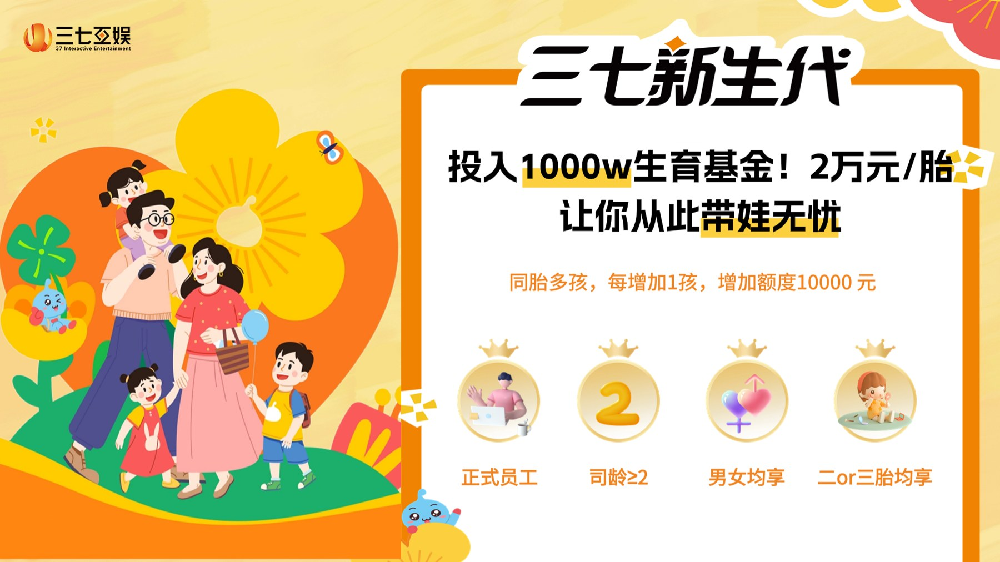
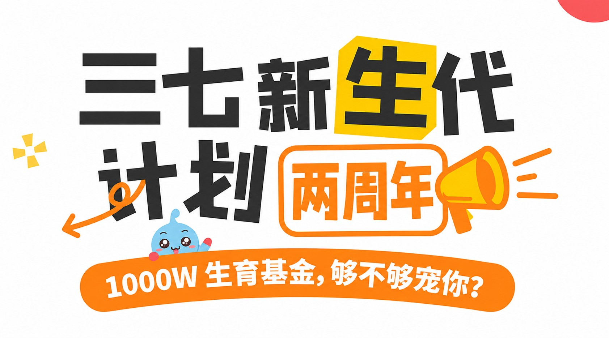

作品文档阅读版 · 何静瑶 Katie
下载原始文档【KOL合作Brief】六一探厂三七互娱
【线下打卡时间】6月1日 12:00-14:00
【脚本提交时间】5月29号17点前
【成片时间】6月5号
一、内容发布要求
内容形式：Vlog打卡视频（1-3分钟左右）
必带核心元素
画面需带有三七互娱品牌标识、新生代基金 2 周年相关图片


2. 文案 / 口播需明确提及 游戏大厂三七互娱新生代基金 2 周年，投入1000万生育基金
3. 必带话题标签：
#广州游戏大厂三七互娱 #好会玩的游戏大厂三七互娱 #三七新生代 #三七互娱生育基金1000w
内容逻辑： 六一玩心活动 → 自然引出新生代基金 2 周年 → 讲清基金价值与公司关怀
活动核心背景
1. 活动核心目的
借「六一玩心企划」的欢乐氛围，重点传播「三七新生代基金 2 周年」，将公司的硬核福利与人文关怀具象化、故事化。
2. 关于「新生代基金」
定位：这是三七互娱为了更好地关怀员工生活，于 2024 年设立的一项专项生育支持基金，充分体现了公司对员工人生重要阶段的支持与陪伴。（要转化成你们自己的语言）
核心数据：2024 年 6 月 13 日正式启动，初始注入资金：1000 万。
福利标准：为符合条件的在职员工（司龄满 2 年）提供每胎 2 万元的生育支持（男女员工均可享受）。
两周年成果：活动启动；两周年以来，已覆盖235+组员工家庭，累计发放福利金470+万元，员工满意度达100%。
打卡核心亮点 & 必拍内容
「我们的孩子气」公益专区（1 楼）/ 六一公益捐书爱心行动（2 楼中庭）
口播参考：“逛完公益区真的感觉哈特暖暖，没想到对员工的关怀也很实在！听路过的员工提到今年刚好是三七新生代基金 2 周年，千万福利守护员工人生重要时刻，社会关怀 + 员工关怀双拉满，啊，我也好想入职啊！”
玩心幼稚园互动游戏区（3 楼多功能厅）
拍摄内容：可沉浸式体验 1-2 款趣味小游戏。
1.拍摄集章打卡、抽奖的过程。
2.捕捉现场员工欢乐互动的氛围。
口播参考：“哇，三七互娱真的把员工当小孩宠，又能玩游戏又能抽奖，这也太好了吧！而且，我听说今年刚好是他们新生代基金 2 周年，生娃公司给补贴，简直是打工人的福音！”
「今天我蒸蚌！」自我肯定互动
口播参考：“真的有被这个环节治愈到～看来三七不只关注工作，更在意员工情绪与生活→引出生育基金
四、选题方向参考（仅供参考，鼓励自由发挥）
选题方向一：【职场 / 大厂生活类】—— 《游戏大厂的六一，居然藏着这样的福利？》
核心逻辑：以 “沉浸式体验游戏大厂六一” 为主题，通过展示丰富的活动和奖品，在视频高潮或结尾处，重磅推出 “新生代基金 2 周年” 这一福利。
选题方向二：【情感 / 治愈类】—— 《被这家公司暖到了！在三七做回快乐小孩》
核心逻辑：从个人情感体验出发，自然过渡到对公司文化的思考，通过 “新生代基金 2 周年” 的具体事例，展现公司如何为员工的 “幸福未来” 保驾护航。